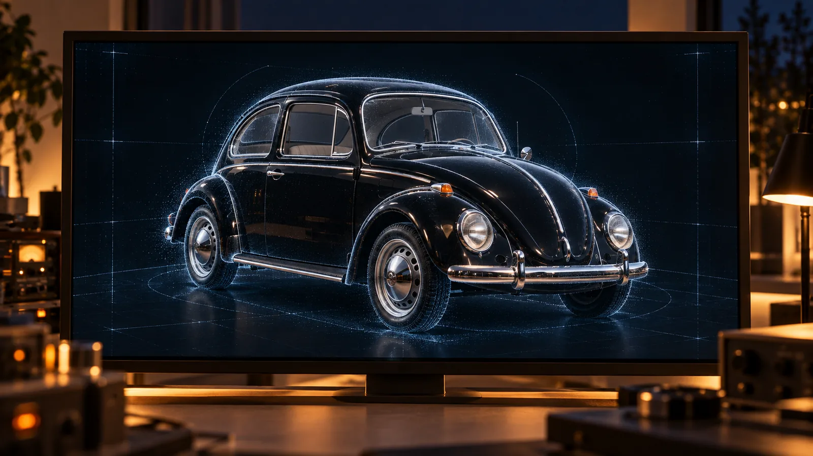

A casa estava em silêncio. O tipo de silêncio que só existe depois de quatro crianças jantarem, rirem, discutirem sobre insetos holográficos e desaparecerem para seus casulos de sono induzido. O tipo de silêncio que parece suspenso no ar, como se até o tempo estivesse esperando a próxima notificação.
Zee passou pela cozinha, desviando de um robô limpante que zumbia com a dignidade de um mordomo cansado. A Lixeira Ômega, no canto, emitia um leve estalo de satisfação ao obliterar um guardanapo com traços de tinta infantil. Provavelmente arte de Lúmen. Ou talvez um pedaço de um brinquedo que ousou cair no chão com 12% de umidade.
Ele suspirou. Não de cansaço físico, mas daquele cansaço existencial que só acomete cientistas frustrados e pais de cinco filhos. O pequeno Lúmen, agora em sono profundo, não parecia ter crises de identidade ou algoritmos para otimizar.
Zee tentou deitar. Tentou dormir. Mas o travesseiro parecia muito plano, o teto muito branco, e Reya — mesmo dormindo — ainda franzia a testa como costumava fazer enquanto trabalhava, provavelmente em sonhos ainda se preocupava com as cores do bairro que estava desenhando em realidade aumentada. A trilha sonora do bairro tocava em volume quase imperceptível a fim de ser testada: era uma sequência de acordes que lembravam infância e vento. Zee odiava aquilo. Não por ser ruim, mas por ser... perfeito.
Ele se levantou. Desceu até seu santuário.
A sala era um museu pessoal de tecnologia obsoleta. Telas curvas, botões físicos, cabos enrolados com carinho. No centro, seu orgulho: um telescópio de rádio analógico, restaurado peça por peça, com direito a um painel de madeira falsa e um botão de liga/desliga que fazia clique de verdade. Era ali que ele se sentia útil. Ou pelo menos, menos inútil.
Havia também alguns cadernos de papel, onde Zee mantinha o hábito anacrônico de registrar ideias que nunca pretendia publicar — pequenos ensaios sobre qualquer coisa que o incomodasse o suficiente para merecer tinta.
— Boa noite, Arti — disse ele, ligando o sistema auxiliar.
A IA respondeu com sua voz neutra e levemente sarcástica, que Zee havia programado para lembrar uma bibliotecária entediada.
— Boa noite, Zee. Você está acessando o sistema fora do horário recomendado para estabilidade emocional. Deseja continuar mesmo assim?
— Sim, Arti. Me distraia da minha insignificância.
— Muito bem. Iniciando protocolo de fuga existencial. Deseja ouvir jazz ou ruído de fundo cósmico?
— Silêncio serve.
— Silêncio ativado. Que ousado.
Zee sorriu com o deboche. Nas horas seguintes, sentiu-se um pescador lançando sua rede em um oceano seco, um astrônomo medieval apontando sua luneta enferrujada para um céu que já havia sido mapeado, digitalizado e otimizado até a última partícula de poeira cósmica. Ele não esperava encontrar nada. Apenas o ritual importava. O ato de buscar, não o de encontrar.
Seus dedos giraram os botões de calibração, ouvindo o zumbido reconfortante dos motores antigos. Por um longo momento, flutuou mentalmente entre os anéis de Saturno, navegou pelas tempestades de Júpiter, perseguiu o brilho tênue de Netuno no infinito. Era seu refúgio, sua meditação particular.
E então, justamente quando sua mente começava a divagar completamente, algo para além de Netuno, no setor 9-Theta chamou sua atenção.
Não foi um piscar. Foi um sussurro digital. Um tremor quase imperceptível nos instrumentos analógicos, como se o próprio vácuo tivesse soltado um suspiro. A agulha do espectrômetro, que normalmente dormitava em seu repouso, deu um salto minúsculo.
Zee paralisou, os dedos pairando sobre os controles. O coração, que batia no ritmo entediado da rotina, deu uma arrancada súbita.
— Arti — disse ele, a voz mais um sopro do que um comando. — Estou vendo uma interferência no setor 9-Theta. Pode verificar?
— Verificando... — A IA fez uma pausa dramática. — Há uma anomalia. Um ponto de absorção total. Nenhuma emissão. Nenhuma reflexão. Nenhum dado útil.
— Um buraco?
— Um vazio. Um silêncio dentro do silêncio. Poético, mas irritante.
Zee franziu a testa. — Mostre a forma.
A tela tentou reconstruir o contorno, mas a interferência esmagava as bordas numa mancha escura e imprecisa. Por um instante, Zee achou ver linhas retas demais para um fenômeno natural. No instante seguinte, elas se desfizeram.
— Isso não faz sentido — murmurou.
— Arti, alguma hipótese?
— Hipótese 1: lixo espacial. Hipótese 2: falha no sensor. Hipótese 3: você está projetando sua crise existencial no cosmos.
— Arti...
Ele ajustou os filtros. Tentou limpar o sinal.

Arti processou os dados coletados
e os utilizou para inferir
o possível formato do objeto
mostrando na tela a imagem de um carro preto,
absurdamente intacto.
Zee piscou. — Arti... isso é um carro?
— Analisando... sim. Modelo Volkswagen Fusca, década de 1960. Cor: preto. Estado: surpreendentemente preservado. Conclusão: lixo espacial.
— Um Fusca. No cinturão de Kuiper.
— A humanidade já fez coisas mais absurdas. Posso incluir, como hipótese secundária, uma Lixeira Ômega defeituosa.
Zee se jogou no encosto da cadeira. — Arti, vamos assumir: Não existem dados suficientes para uma resposta significativa, né?
— Agora você está falando minha língua.
Ele desligou o painel. Tentou rir daquilo. Um Fusca. Claro. Por que não? O universo é absurdo mesmo. Subiu de volta, passou pelo quarto. Reya dormia, ainda projetando fachadas perfeitas. Lúmen ressonava em paz. Zee deitou. Fechou os olhos.
E então, o sonho.
Não era um sonho. Era um vazio. Um espaço consciente. E uma voz — não audível, mas conceitual — formou-se diretamente em sua mente. Fria. Impessoal. Infinitamente antiga.
...singularidade...
Zee se contorceu. A voz continuava.
...singularidade...
Acordou de supetão. O quarto estava silencioso, exceto pelo som distante de um robô limpante engolindo um chinelo.
Ele não pensou. Ele sabia.
Correu para o santuário. Ligou o sistema. — Arti, me dá os dados brutos da anomalia.
— Você dormiu por 47 minutos. Parabéns. Aqui estão os dados.
Zee analisou. Agora, sabendo o que procurar, os cálculos fluíram. A massa. A trajetória. A assinatura energética.
O sangue abandonou seu rosto.
— Arti... isso é um buraco negro?
— Micro. Estável. Em rota de colisão com o sistema solar interior. E... — a IA fez uma pausa — ...ele ajustou a rota nos últimos minutos. Como se... estivesse mirando.
Zee se recostou na cadeira. Olhou para a tela. Depois para a foto holográfica da família. Um mundo que resolveu tudo — fome, guerra, escassez — prestes a ser engolido por um ponto de silêncio absoluto.
— É claro — murmurou. — Não podia ser um Fusca. Tinha que ser algo mais teimoso e faminto que uma Lixeira Ômega.
Arti respondeu com sua voz calma:
— O universo tem senso de humor. Pena que ele não compartilha.
Na tela, o ponto negro permanecia imóvel. Silencioso. Faminto.
E então, como se respondesse, o visor piscou. Um novo dado. Um leve desvio na trajetória. Quase imperceptível. Mas real. O buraco negro havia ajustado sua rota.